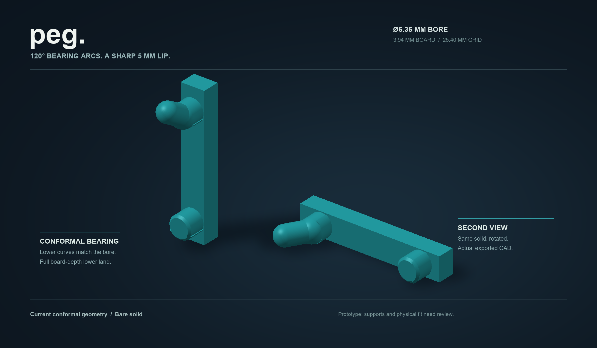
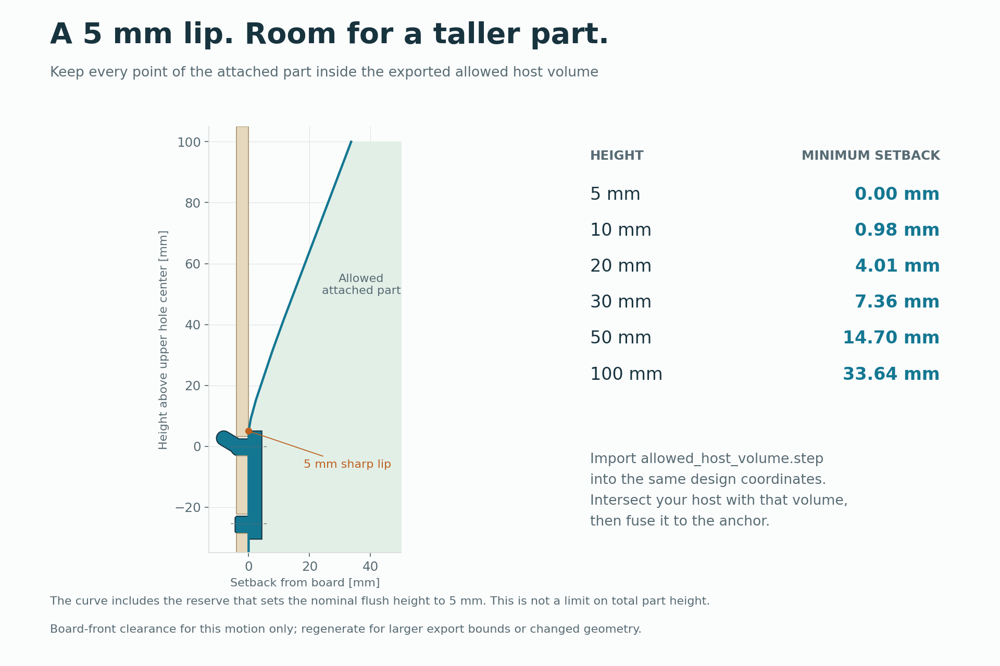
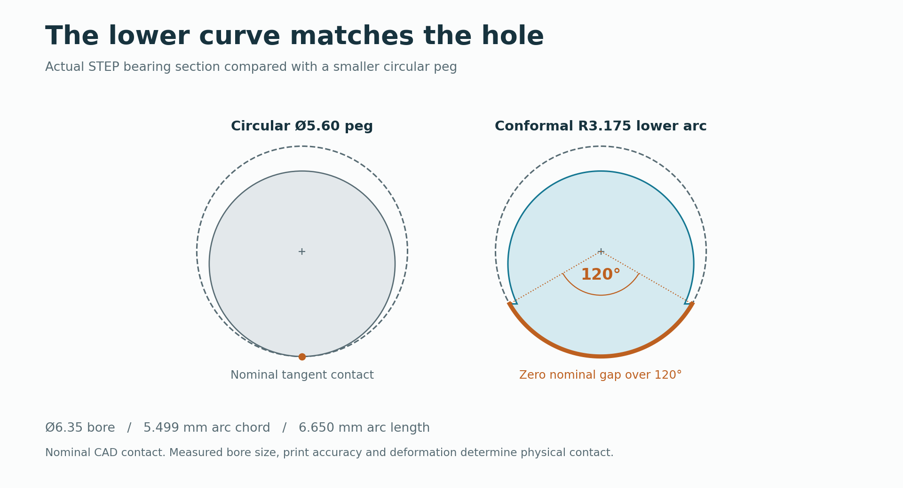
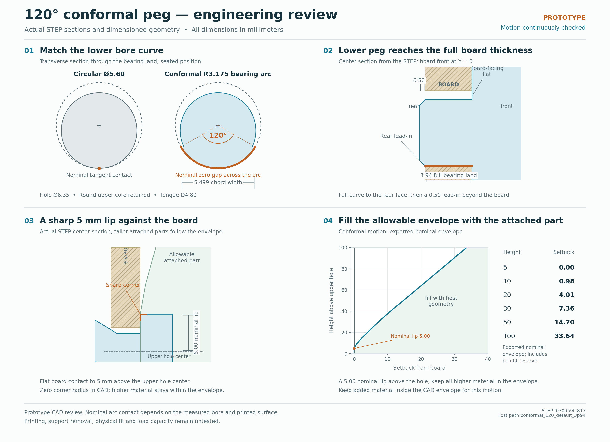
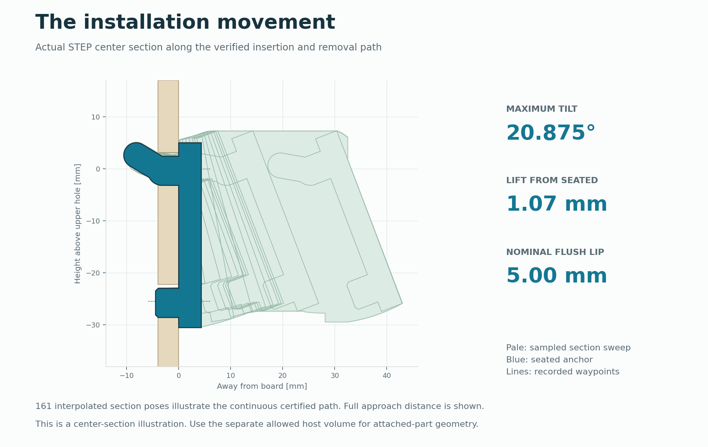

PEG / CONFORMAL ANCHOR · PROTOTYPE
A small interface.
Room for your next part.
A reusable attachment for holders, bins and brackets. Bore-matching bearing arcs locate the anchor; an importable motion envelope tells you where the attached part can go.
- BORE
- 6.35 mm
- PITCH
- 25.4 mm
- BEARING ARC
- 120°

Current conformal files
| Download | Contents |
|---|---|
| Functional anchor ↗ | STEP · one solid in design coordinates |
| Allowed host volume ↗ | STEP · reference boundary; do not print or fuse |
| Side orientation ↗ | Bare STL · support preparation required |
| Upright orientation ↗ | Bare STL · support preparation required |
| Design coordinates ↗ | Bare STL · aligned with the STEP files |
These are geometry and print-preparation inputs. Current conformal supports, physical fit and loads remain unqualified. Earlier round supports belong to a different design.
Design around the movement
{kind=link}

Open full image ↗Import the anchor and allowed volume together, in the same coordinates. Keep every added rib, fastener and holder surface inside that volume, then fuse the holder into the front spine with real shared material.
The 5 mm nominal lip is measured above the upper hole center. Taller attached parts move forward according to the envelope. The allowed volume stays out of the finished part.
Bearing geometry / exact curves
{kind=link}

Open full image ↗- Board thickness
- 3.94 mm nominal default; measure the intended board.
- Lower bearing
- 3.94 mm full-depth land, followed by a 0.50 mm nose beyond the rear face.
- Upper bearing
- 3.158095 mm bearing land; 5.60 mm core and 4.80 mm retaining tongue.
- Board-facing seam
- Sharp planar corner. No seating cam, replacement fillet or inferred fit tolerance.
What the evidence establishes
| Record | Meaning |
|---|---|
| Continuous motion certificate ↗ | 12 waypoints; 168 interval certificates across 10 free-motion segments, plus exact final-contact translation. |
| Independent STEP check ↗ | 400 sampled poses with zero reported overlap, including seating. |
| Exported geometry validation ↗ | Solid and mesh checks on the delivered geometry. |
| Allowed-volume certificate ↗ | A host boundary tied to the current movement and export bounds. |
The proof concerns ideal rigid geometry in the nominal bore, with no additional radial bore reserve. It is not a printed fit, contact-pressure, fatigue, creep or load rating.
Drawings & movement envelope
{kind=link}

Open full image ↗{kind=link}

Open full image ↗Prepare a physical sample
Use OrcaSlicer with the intended printer and filament profile. Inspect the first layers of each projection and choose supports that preserve the tongue, bearing curves and sharp seam. The current meshes contain the functional anchor only.
Print one fit sample before committing to a holder. Check insertion, removal and support cleanup on the real board, then test a representative complete holder.